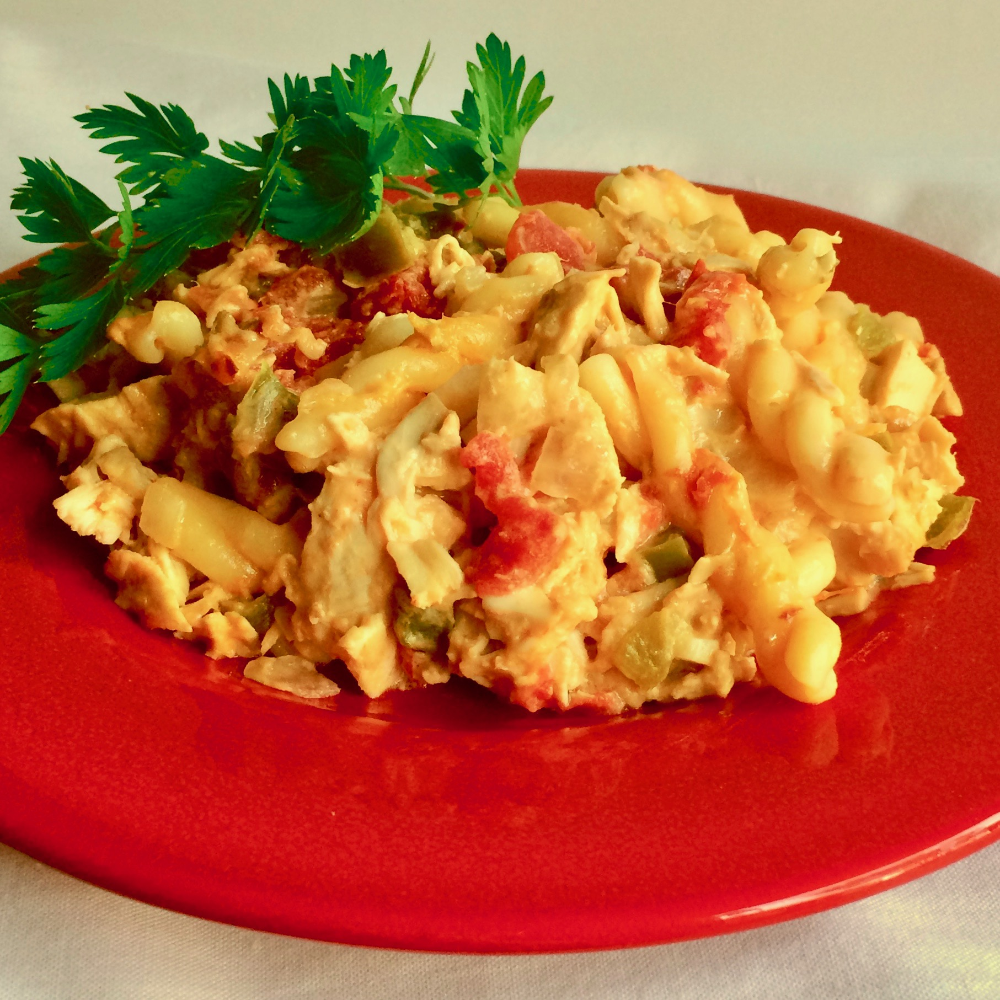

Pantry Chicken Casserole

Description
Using pantry items plus a couple of fresh items, you can create a cheesy, comforting casserole
your whole family will love. Though it does include RO*TEL® and a can of mild green chile
peppers, it's not spicy, but if you like the heat, choose hot RO*TEL® and peppers. This
pantry chicken casserole reheats well, too, but I had to hide it, or there would have been
no night #2! A crusty bread and a green salad complete this easy pantry meal.
Ingredients
- cooking spray
- 1 (16 ounce) package penne pasta
- 4 tablespoons salted butter
- 1 large onion, chopped
- 1 green bell pepper - stemmed, seeded, and finely chopped
- 1 (8 ounce) package sliced fresh mushrooms
- 3 cloves garlic, minced
- 2 (8 ounce) packages processed cheese food, cubed
- 1 (14.5 ounce) can diced tomatoes, undrained
- 1 (10 ounce) can diced tomatoes and green chilies, undrained
- 1 pound fresh tomatillos, husks removed, halved
- 1 (4 ounce) can mild chopped green chile peppers
- 4 cups cooked chicken, cut into bite-sized pieces
Steps
- Preheat the oven to 350 degrees F (175 degrees C).
Spray a large casserole dish with cooking spray.
- Bring a large pot of lightly salted water to a boil. Add penne and cook, stirring
occasionally, until tender yet firm to the bite, about 11 minutes. Drain.
- While the pasta is cooking, melt butter in a large skillet over medium heat. Add onion and bell
pepper and cook, stirring occasionally, until vegetables are tender, about 5 minutes. Add
mushrooms and cook until they release their liquid, about 5 minutes. Add garlic and cook,
stirring occasionally, until fragrant, about 1 minute.
- Stir in processed cheese food, diced tomatoes and juice, diced tomatoes and green chiles
with juice, and mild chile peppers. Cook and stir until cheese has melted, 5 to 10
minutes. Remove from heat and stir in cooked pasta and chicken. Pour into the prepared
baking dish.
- Bake in the preheated oven until heated through, about 20 minutes. Serve warm.